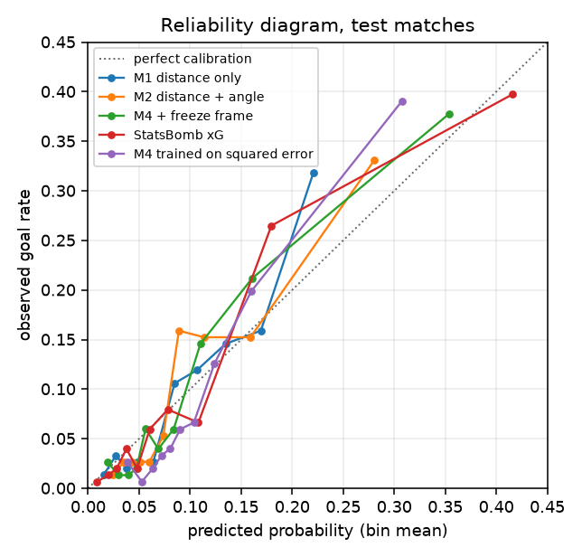
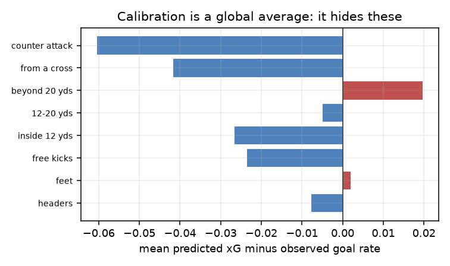

31005 Machine Learning · A2 · Sean Woods 26107565
Logistic regression built by hand, and what log loss does not measure.
7,451 shots · 314 matches · six international tournaments
In: X, 4,444 shots × 35 features. y in {0,1}, 1 = scored.
Out: w, 35 weights plus a bias. Plus the training mean and sd of every feature.
In: one shot's features, scaled with the stored training statistics.
Out: one number in (0, 1). No threshold, no label. The probability is the product.
The question
An xG model cannot know whether a shot goes in. Two identical chances end differently and neither outcome is a mistake.
What it is actually for is calibration: of the chances it calls 0.30, about 30% should be scored.
But it is trained by minimising log loss over individual binary outcomes. Those are not the same objective.

The model
Why not the perceptron. It returns a hard label and I need a probability, so the output type is wrong. And shot data is not separable: the same chance is scored one week and saved the next, so it never converges.
The gradient is error times input. The sigmoid's derivative and the log's derivative cancel, which is why cross entropy and the sigmoid are paired.
verified analytic gradient vs central differences: max relative error 4.55e−10
The finding
| Situation | Shots | Model | Really | Gap |
|---|---|---|---|---|
| All shots | 1,509 | 9.69% | 9.68% | +0.0 |
| Counter attacks | 55 | 15.8% | 21.8% | −6.0 |
| From a cross | 270 | 12.9% | 17.0% | −4.2 |
| Beyond 20 yds | 660 | 4.2% | 2.3% | +2.0 |
You cannot find this in the loss. You find it by grouping residuals along dimensions the model never saw.

Evidence
| Model | Features | Log loss | ECE | Accuracy |
|---|---|---|---|---|
| M0 base rate | 0 | 0.3182 | 0.0074 | 90.3% |
| M1 distance | 1 | 0.2783 | 0.0237 | 90.3% |
| M2 + angle | 2 | 0.2740 | 0.0280 | 90.6% |
| M3 + situation | 30 | 0.2599 | 0.0302 | 91.0% |
| M4 + freeze frame | 35 | 0.2568 | 0.0245 | 91.1% |
| StatsBomb commercial | — | 0.2472 | 0.0194 | 90.9% |
| M4 on squared error | 35 | 0.2657 | 0.0373 | 90.9% |
1. Sixty lines of NumPy land within 0.010 log loss of a commercial model trained on millions of shots.
2. Predicting "no goal" every time scores 90.3% accuracy. Accuracy is not measuring the task.
3. Changing only the criterion to squared error made calibration 50% worse while barely moving the ranking. The p(1−p) factor survives and the update stalls where the model is most wrong.
Next: put the grouping into the criterion. A squared group-bias penalty, so the loss contains what the evaluation measures.